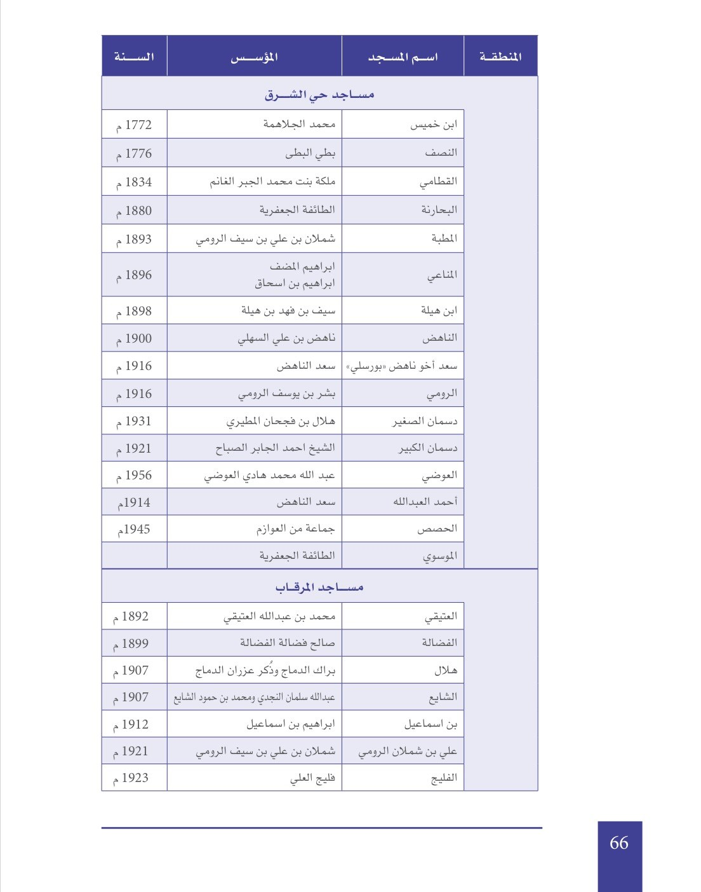

كتاب عن العمل الخيري في الكويت، بإحصاءات حتى نهاية ٢٠١٥ · صفحات من كتاب «الوجه الإنساني للمجتمع الكويتي: عرض وتوثيق للمبادرات الخيرية الشعبية في الكويت»، غرفة تجارة وصناعة الكويت ومركز البحوث والدراسات الكويتية
مسجد القطامي، ولجنة جاسم عبدالعزيز القطامي سنة ١٩٥٤، ومسجد مريم عبدالعزيز، ومبرة رقية عبدالوهاب، في «الوجه الإنساني للمجتمع الكويتي»
ما هي
في الصفحة ٦٦، في جدول مساجد حي الشرق: مسجد «القطامي»، المؤسس «ملكة بنت محمد الجبر الغانم»، سنة ١٨٣٤م. وفي الصفحة ٦٩، في قائمة مساجد محافظة العاصمة: «مسجد مريم عبدالعزيز القطامي» في الشويخ السكنية. وفي الصفحة ١٠٣: «كان أبرزها اللجنة الشعبية لجمع التبرعات التي تأسست في عام ١٩٥٤م بمبادرة من ثلّة من أعيان ووجهاء الكويت، هم عبدالعزيز الصقر ويوسف عبدالعزيز الفليج ومحمد عبدالمحسن الخرافي وعبدالعزيز محمد الشايع ومحمد بن يوسف النصف ومرزوق عبدالوهاب المرزوق وبدر السالم العبدالوهاب وجاسم عبدالعزيز القطامي». وفي الصفحة ١١٠، في قائمة المبرات الخيرية الموجودة في الكويت حتى نهاية عام ٢٠١٥، رقم ٥: «مبرة رقية عبدالوهاب القطامي للأعمال الخيرية ومرضى السرطان».
أهميتها
كتاب واحد يوثق مسجد العائلة في الشرق، وجاسم من مؤسسي اللجنة الشعبية لجمع التبرعات سنة ١٩٥٤، ومسجدا باسم مريم عبدالعزيز القطامي، ومبرة خيرية باسم رقية عبدالوهاب القطامي.
صور الصفحات


ملاحظات
نعرض هنا الصفحات الأولى فقط، ويرى أفراد العائلة بعد تسجيل الدخول كل الصفحات وعددها 5.
أسماء أخرى
المصادر
الوجه الإنساني للمجتمع الكويتي، غرفة تجارة وصناعة الكويت ومركز البحوث والدراسات الكويتية، ص ٦٦ و٦٩ و١٠٣ و١١٠
كيف كُتب هذا النص: لا تظهر سنة النشر في الصفحات المرسلة، والإحصاءات حتى نهاية ٢٠١٥. رُبطت مريم ورقية بالوحيدتين بهذين الاسمين في الشجرة، ويحتاج ذلك إلى تأكيد العائلة.
افتح في الموقع التفاعلي